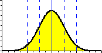
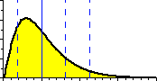
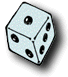
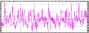

|
Gaussian distribution  | |
|
The Monte Carlo method (or simulation) was used
in "A Practical Guide to Wavelet Analysis"
to verify that the wavelet power spectrum was indeed chi-square distributed.
The method was also used to determine the empirical formulae for
time-averaging and scale-averaging (paper Sections 5a and 5b).
The Monte Carlo method (or simulation) is a statistical method for finding out the answer to a problem that is too difficult to solve analytically, or for verifying the analytical solution. It is called Monte Carlo because of the gambling casinos in that city, and because the Monte Carlo method is related to rolling dice.
|
Chi-square distribution  | |
Here's an example:
If you roll two dice, then the chances of getting a total of "two" (a "one" on each) are 1 in 36. This is easy to figure out. But if you didn't know the answer, you could use the Monte Carlo method. You just roll two dice thousands of times, and add up how many times you got a total of "two". Eventually, your fraction of "two's" to "total rolls" will approach 1/36.
|  | |
In our paper, we wanted to verify that the
statistical distribution for the wavelet power was chi-square.
Here's the Monte Carlo method we used:
|
Time series 
Wavelet power spectrum
Chi-square results
|